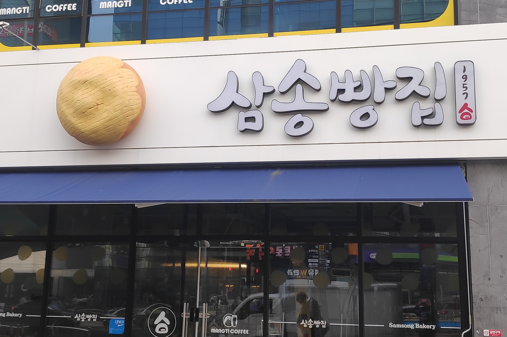
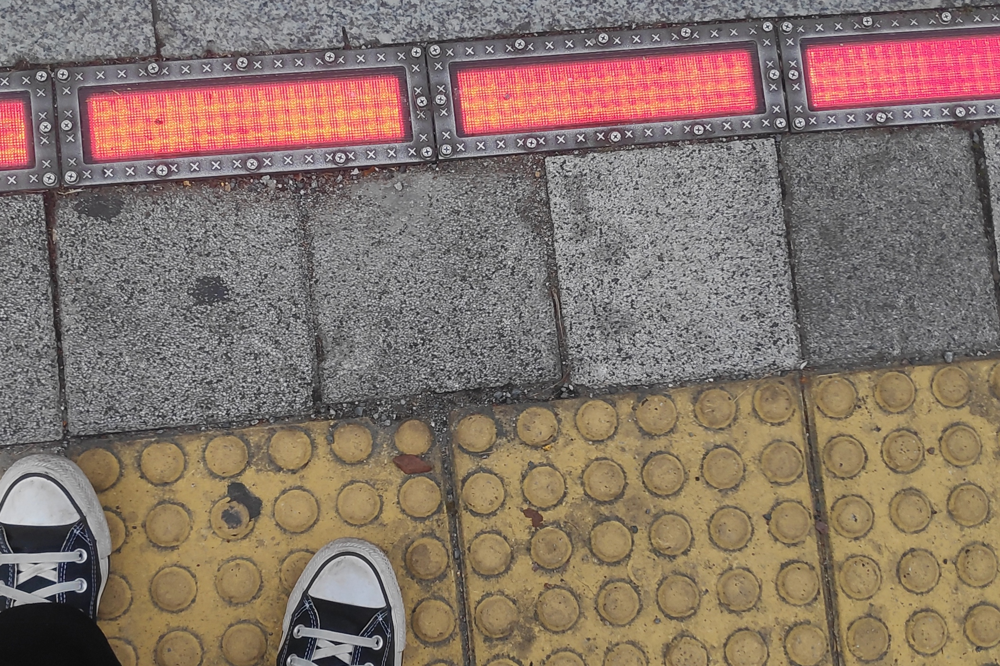
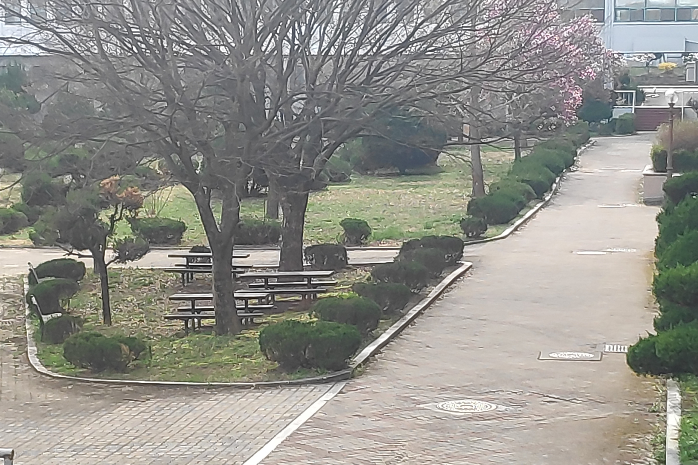
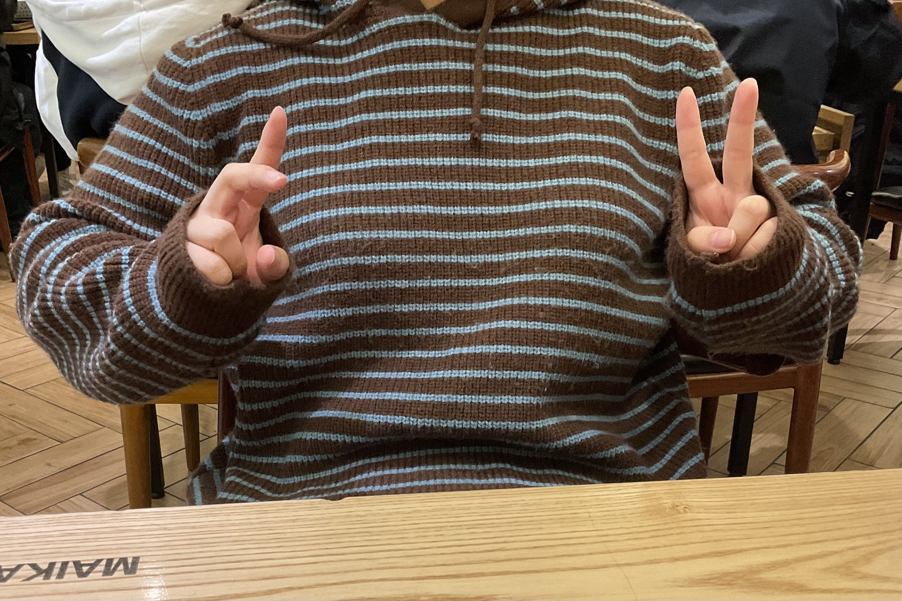
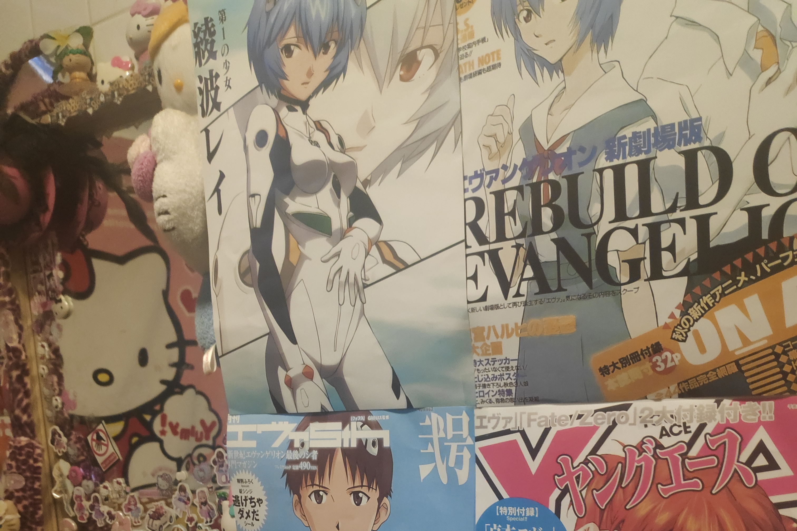
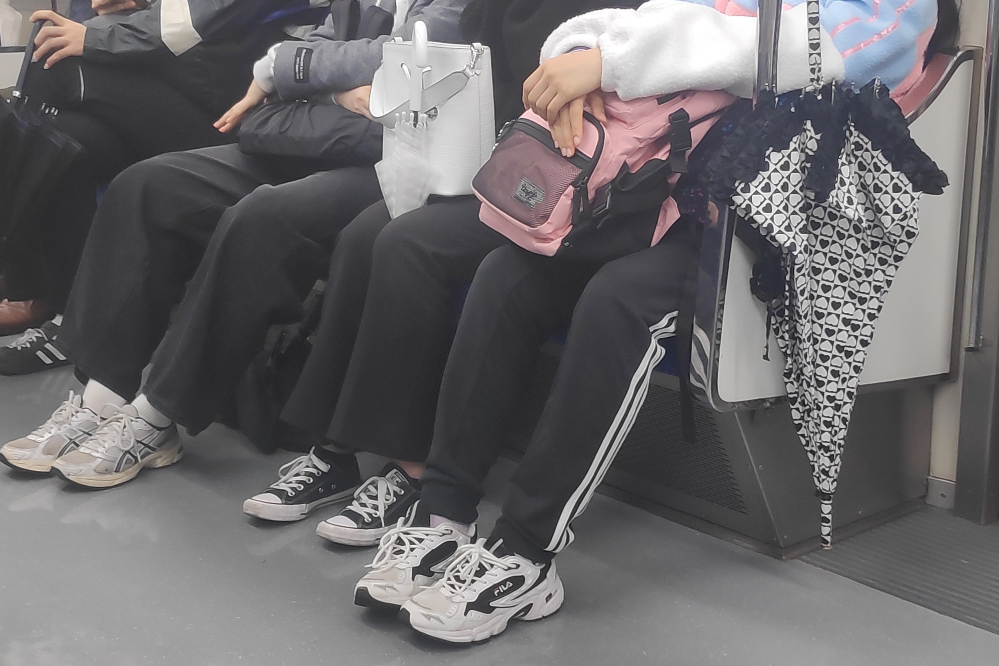
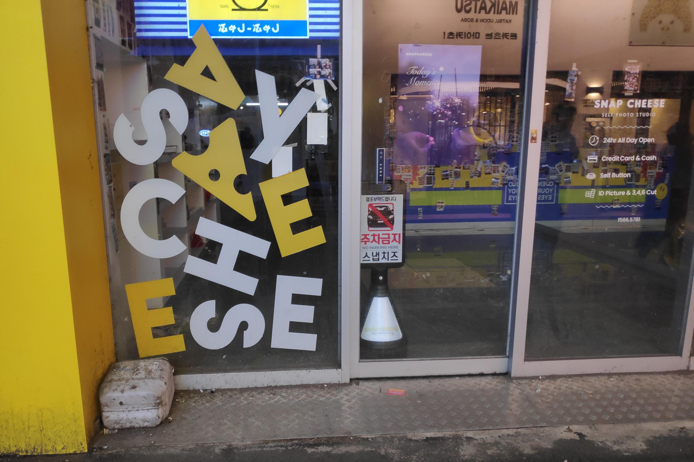
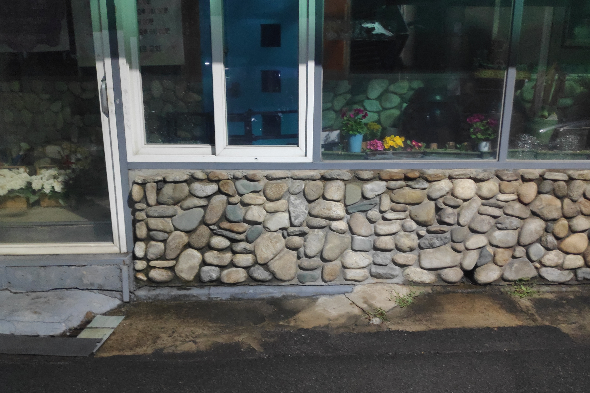
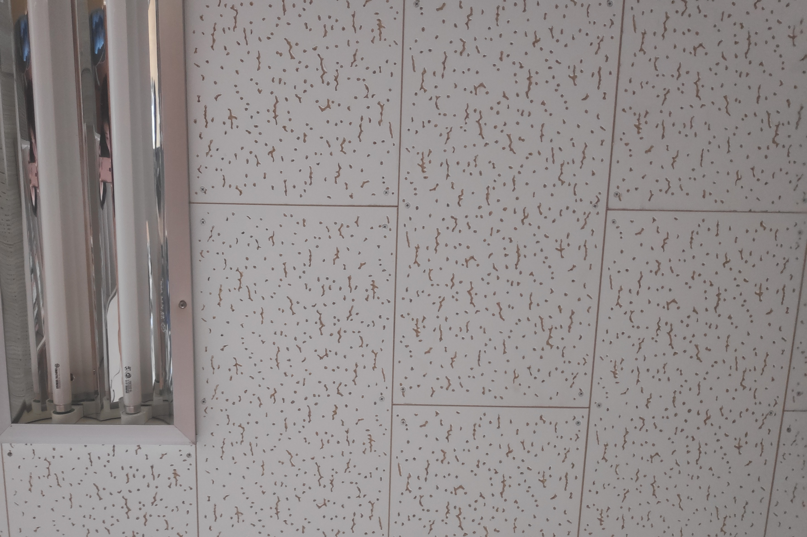
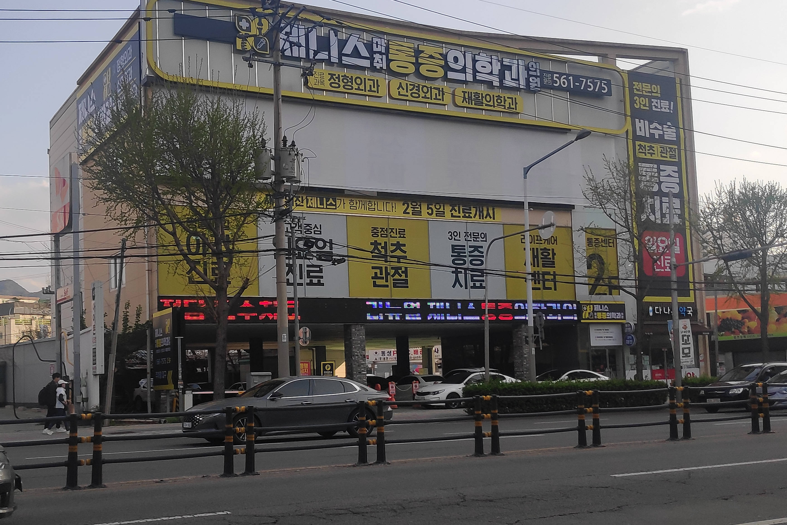

2024.04.02.
빵집 간판

한 베이커리의 간판이다. 요즘은 간판 디자인에 관심이 많아 핀터레스트나 구글을 통해서 특이한 간판 디자인들을 자주 찾아본다. 그래서 이 간판을 유심히 보게 됐다. 동글동글한 폰트의 삼송 빵집이라는 텍스트가 간단하게 배치되어 있다. 그 옆에는 입체적인 빵 모형이 있다. 앙증맞고 귀여운 요소다. 평면적인 간판 위에 입체적인 포인트가 들어가면 참 깔끔하고 귀엽다. 빵 모형이 빵집이라는 정보를 더욱 잘 알려주기도 해서 좋다. 앞으로도 지나가는 건물들의 간판들을 유심히 보아도 좋겠다.
LED 신호등

4차선 도로의 점자 블록 앞 LED 발판이다. 신호등 역할을 한다. 당시, 상당히 밝은 아침이었음에도 불구하고 LED의 붉은색이 시선을 사로잡을 만큼 채도를 빛내고 있었다. 요즘 어떤 디자인이 훌륭한가에 대해서도 가끔 생각했다. 이전에 점자블록의 도로의 미감을 망친다는 이유로 항의를 받았던 적이 있었던 걸 인터넷 기사를 통해서 봤다. 하지만 나는 이 점자블록이나 LED처럼 약자를 배려하는 공간 디자인도 필요하다고 생각한다. 이렇게 사회적 약자를 배려하면서도 디자인까지도 챙겨가면 그것이야 말로 정말 좋은 디자인이다.
학교 수풀

학교의 구조물이다. 전체적으로 동글동글하게 재단된 나무와 풀들이 마치 정원과 비슷하다. 이 날은 안개도 자욱했기 때문에 분위기가 참 예뻤다. 나무의 잎들이나 풀들을 조금 손대어 둥글게 다듬기만 해도 아기자기하고 2D스러운 느낌을 줄 수 있다. 식물들을 잘 가꾸었더니 전체적인 공간의 디자인이 되는 것 같아 좋다. 이 공간들을 보고 정원 디자인들을 몇 개 찾아보았다. 이쪽 분야에도 관심이 생길 수 있었던 기회였다.
2024.04.03.
줄무늬

맞은편에 앉은 동기의 스트라이프 줄무늬 옷이다. 이 날은 등교하면서 패션 관련 유튜버의 숏츠들을 보면서 등교했다. 그런데 마침 체형 부각과 옷 디자인에 대한 내용들이었다. 가로 스트라이프의 옷은 세로 스트라이프에 비해서 조금 통통한 체형의 사람에게는 오히려 독이 되는 디자인이라는 이야기를 들었다. 이 사진의 주인공은 통통하지 않은 체형이라 예시가 되지는 못한다. 하지만 직접 보니 조금 알 것 같다. 확실히 세로 스트라이프를 입었을 때의 모습이 좀 더 말라보인다고 느꼈기 때문이다. 나도 앞으로는 이러한 팁들을 참고하며 옷을 입어야겠다.
에반게리온

동성로의 한 카페다. 카페의 컨셉이 키치한 레트로다. 그래서 요즘 유행인 산리오 캐릭터들이나 고전 애니메이션 캐릭터들과 관련된 소품이 많다. 카페 내부 뿐만 아니라 카페 화장실로 들어가는 길목까지 꾸며져 있었다. 그곳에는 포스터들이나 피규어들 그리고 작은 인형들까지 종류가 다양했다. 내가 최근에 인상 깊게 보았던 애니메이션은 에반게리온이다. 그런데 주인공들의 포스터로 가득한 벽면이 있었다. 그래서 인상깊었다. 일본어로 된 포스터라 텍스트를 읽을 순 없었다. 하지만 폰트들이나 색상들을 구경할 수는 있었다. 이 날은 귀가한 후에도 에반게리온이 생각나서 저녁을 먹으며 감상했다.
파스텔

1호선 지하철의 승객들이다. 유난히 그 칸에는 무채색 계열의 옷을 입은 사람들이 가득했다. 그런데 한 분만 눈에 띄는 파스텔 색감의 옷을 입고 있어서 이목을 끌었다. 나도 평소에 검은색 옷을 좋아해서 눈에 띄지않는 색감의 옷만 샀다. 그런데 무채색 사이에서 이런 파스텔 색감의 옷이 위치하니 참 눈에 띄고 예뻤다. 특히 내 근처 사람들도 요즘은 유난히 무채색의 옷을 입는 것 같은데 한 번 쯤은 기분 전환삼아 다른 채도 높은 색감의 옷들도 입어보면 좋겠다. 또, 밝은 분홍과 밝은 하늘색의 조화도 좋다. 그래서 코딩 수업 과제로 웹사이트를 꾸밀때도 이런 색깔들을 선정했던 친구들이 많았구나 싶었다.
2024.04.04.
타이포

포토 스튜디오의 외부 유리창이다. 'say cheese'라는 멘트가 각 글자들이 쏟아지는 형상으로 배치됐다. 가운데 포인트가 되는 치즈가 인상 깊었다. 노란색의 포인트 컬러도 아주 귀엽다. 타이포 디자인들을 핀터레스트에서 찾아보면서 이렇게 쏟아지는 듯한 디자인을 만들어 보고 싶다고 생각했다. 그런데 길거리를 지나다 우연히 발견하니 신기했다. 노란색과 하얀색은 조화가 좋은 조합이다. 폰트 또한 귀엽고 깔끔한 포토 스튜디오의 컨셉에 딱 들어맞는다. 왼쪽 유리창에 포인트를 주고 오른쪽의 정보를 담은 텍스트들은 깔끔하게 배치됐다. 이런 부분이 이전에 들었던 타이포 그래피의 이론들과 부합한다. 역시 기본을 지키는 것이 중요하다.
꽃집 건물

골목의 한 꽃집이다. 흰 색 창틀과 큰 유리창 그리고 벽을 돌로 메꾸어준 디자인이다. 나는 어릴 적 친척의 집에 자주 놀러갔다. 그 친척은 바닷가의 마을에 살았다. 그곳에서 또래 친척들과 놀다가 무심코 주변을 보면 해변의 마을들은 인테리어들이 항상 비슷한 느낌을 주었다. 마침 이 날 우연히 보았던 이 꽃집 건물과 비슷한 디자인이다. 벽면을 꾸미고 있는 돌들과 한색 계열의 유리창이 특히나 더 그런 느낌을 준다. 그래서 우연히 이 건물을 마주하고 나서 어릴 때 친척들과 함께 보냈던 시간들과 기억들을 다시 상기할 수 있었다. 역시 좋았던 순간들은 이렇게 예상치 못한 일상에서 한 번씩 떠올리게 된다.
2024.04.05.
천장 타일

디자인관 건물 천장 타일이다. 문득 이 타일이 익숙한 패턴임을 알았다. 학창 시절 보건실 침대에 누워있으면 항상 볼 수 있었던 그 흔한 타일이었다. 하얀 타일에 단순히 물결이나 점이 새겨진 패턴이다. 유난히 교실에서 이렇게 많이 쓰이는 디자인은 누가 처음 창작했을까? 단순하면서도 촘촘한 패턴인데 눈이 피로하지 않아서 좋은 디자인이다. 요즘 나는 일러스트레이터로 각종 패턴들을 만들어보는 중이다. 그래서 나도 나중에 이런 패턴들을 만들어 보고 싶다. 이후로는 종종 떠오를 때마다 이런 곳은 어떤 패턴의 천장인지 재미삼아 찾아봐야겠다.
병원 건물

병원 건물의 외부다. 텍스트들의 배치가 내가 최근 배우고 있는 수평적인 레이아웃의 타이포 그래피와 동일했다. 가장 중요한 병원의 이름이 최상단에 다른 텍스트와는 다른 폰트로 위치되어 있다. 아래의 정보는 내용의 카테고리 별로 수평적으로 배치되어 있다. 오른쪽은 세로 흐름의 텍스트도 위치되어 있다. 이런 디자인들이 타일 같은 느낌을 준다. 또, 노란색이 시선을 확 사로잡아 좋다. 건물 간판 디자인의 중요함을 알 수 있는 시간이었다.